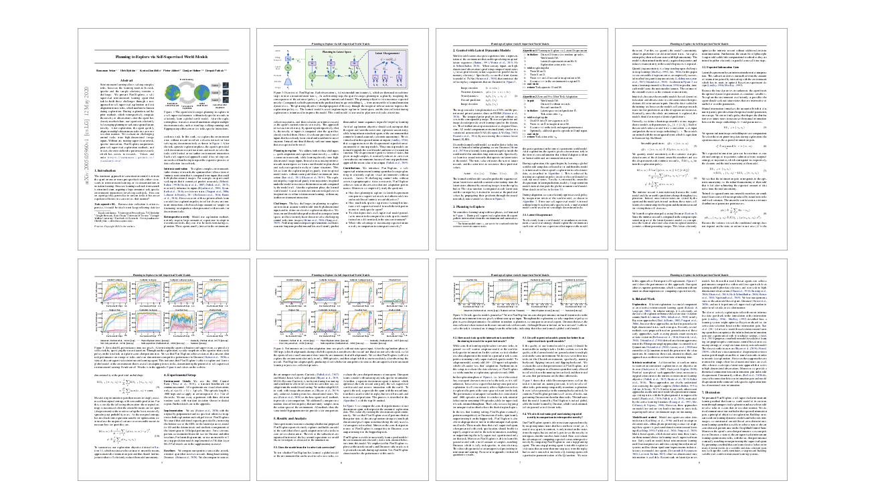

Reinforcement learning allows solving complex tasks, however, the learning tends to be task-specific and the sample efficiency remains a challenge. We present Plan2Explore, a self-supervised reinforcement learning agent that tackles both these challenges through a new approach to self-supervised exploration and fast adaptation to new tasks, which need not be known during exploration. During exploration, unlike prior methods which retrospectively compute the novelty of observations after the agent has already reached them, our agent acts efficiently by leveraging planning to seek out expected future novelty. After exploration, the agent quickly adapts to multiple downstream tasks in a zero or a few-shot manner. We evaluate on challenging control tasks from high-dimensional image inputs. Without any training supervision or task-specific interaction, Plan2Explore outperforms prior self-supervised exploration methods, and in fact, almost matches the performances oracle which has access to rewards.
Planning to Explore
The agent first leverages planning to explore in self-supervised manner, without task-specific rewards, to learn a global world model. After the exploration phase, it receives reward functions to adapt to multiple tasks, such as standing, walking, running, and using either zero or few tasks-specific interactions.

Overview of the Algorithm

Source Code
We have released our implementation in Tensorflow on the github page. Try our code!
| [GitHub] |
|

|
Citation |
|
@inproceedings{sekar2020planning,
title={Planning to Explore
via Self-Supervised World Models},
author={Ramanan Sekar and Oleh Rybkin
and Kostas Daniilidis and Pieter Abbeel
and Danijar Hafner and Deepak Pathak},
year={2020},
Booktitle={ICML},
}
|